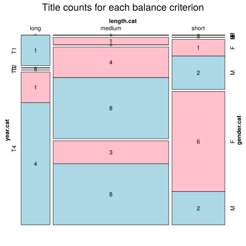

Click on a column heading to sort. Click on a text identifier to read the text (may not work in older browsers).
| Identifier | Encoding | Pages | Words | (Size) | Date (Slot) | Title | Author | Sex | Reprints |
|---|---|---|---|---|---|---|---|---|---|
| GSW0001 |
eltec-0 | 227 | 37549 | (short) | 1912 (T4) | Aus Kinderland | Frohnmeyer, Ida (1882-1968) | F | unspecified |
| GSW0002 |
eltec-0 | 134 | 25126 | (short) | 1921 (T4) | Aus stillen Gassen | Frohnmeyer, Ida (1882-1968) | F | unspecified |
| GSW0003 |
eltec-0 | 307 | 68956 | (medium) | 1920 (T4) | Der glückliche Sommer | Moeschlin, Felix (1882-1969) | M | unspecified |
| GSW0004 |
eltec-0 | 168 | 30370 | (short) | 1918 (T4) | Rosswiler Geschichten und anderes | Baerwart, Theobald (1872-1942) | M | unspecified |
| GSW0005 |
eltec-0 | 361 | 73487 | (medium) | 1908 1900 (T4) | Der König der Bernina | Heer, Jakob Christoph (1859-1925) | M | unspecified |
| GSW00054 |
eltec-0 | 235 | 60869 | (medium) | 1878 (T2) | Heimatlos | Spyri, Johanna (1827-1901) | F | unspecified |
| GSW0006 |
eltec-0 | 475 | 92531 | (medium) | 1898 (T3) | An heiligen Wassern | Heer, Jakob Christoph (1859-1925) | M | unspecified |
| GSW0007 |
eltec-0 | 550 | 114532 | (long) | 1913 (T4) | Die Geschichte der Anna Waser | Waser, Maria (1878-1939) | F | unspecified |
| GSW0008 |
eltec-0 | 367 | 80314 | (medium) | 1913 (T4) | Jungfer Therese | Federer, Heinrich (1866-1928) | M | unspecified |
| GSW0009 |
eltec-0 | 99 | 25970 | (short) | 1880 (T3) | Im Rhonethal | Spyri, Johanna (1827-1901) | F | unspecified |
| GSW0010 |
eltec-0 | 103 | 30767 | (short) | 1903 (T3) | Aus Berg und Tal. Charakterbilder aus dem schweizer. Bauernleben | Kiebler, Ulrich (1864-1929) | M | unspecified |
| GSW0011 |
eltec-0 | 360 | 79740 | (medium) | 1912 (T4) | Pilatus. Eine Erzählung aus den Bergen | Federer, Heinrich (1866-1928) | M | unspecified |
| GSW0012 |
eltec-0 | 414 | 88800 | (medium) | 1882 (T3) | Das Sinngedicht | Keller, Gotfried (1819-1890) | M | unspecified |
| GSW0013 |
eltec-0 | 50 | 12497 | (short) | 1917 (T4) | Das Jätvreni | Waser, Maria (1878-1939) | F | unspecified |
| GSW0014 |
eltec-0 | 131 | 16808 | (short) | 1919 (T4) | Scala Santa | Waser, Maria (1878-1939) | F | unspecified |
| GSW0015 |
eltec-0 | 76 | 21982 | (short) | 1905 (T4) | Spätrot.Rosen im Schnee. Schweizer Novellen | von Berlepsch, Goswina Maria (1845-1916) | F | unspecified |
| GSW0016 |
eltec-0 | 283 | 75238 | (medium) | 1884 (T3) | Aus der Heimat | Walden, Marie (1834-1890) | F | unspecified |
| GSW0017 |
eltec-0 | 136 | 22729 | (medium) !! | 1885 (T3) | Die Richterin | Meyer, Conrad Ferdinand (1825-1898) | F | unspecified |
| GSW0018 |
eltec-0 | 39 | 9015 | (short) | 1891 (T3) | Friedli der Kolderli | Spitteler, Carl (1845-1924) | M | unspecified |
| GSW0019 |
eltec-0 | 229 | 47104 | (short) | 1906 (T4) | Imago | Spitteler, Carl (1845-1924) | M | unspecified |
| GSW0020 |
eltec-0 | 160 | 28754 | (short) | 1914 (T4) | Heimatscholle | Berlepsch, Maria Goswina (1845-1916) | F | unspecified |
| GSW0021 |
eltec-0 | 406 | 110315 | (long) | 1921 (T4) | Ein Rufer in der Wüste | Bosshart, Jakob (1862-1924) | M | unspecified |
| GSW0022 |
eltec-0 | 256 | 52470 | (medium) | 1909 (T4) | Der Pfeiferkönig. Eine Zürchergeschichte | Lienert, Meinrad (1865-1933) | M | unspecified |
| GSW0023 |
eltec-0 | 435 | 111722 | (long) | 1924 (T4) | Der Kinderkreuzzug. 1. Band | Falke, Konrad | M | unspecified |
| GSW0024 |
eltec-0 | 467 | 122684 | (long) | 1924 (T4) | Der Kinderkreuzzug. 2. Band | Falke, Konrad | M | unspecified |
| GSW0025 |
eltec-0 | 281 | 58249 | (medium) | 1893 (T3) | Fermont | Siegfried, Walther (1858-1947) | M | unspecified |
| GSW0050 |
eltec-0 | 270 | 69653 | (medium) | 1887 (T3) | Was soll denn aus ihr werden? | Spyri, Johanna (1827-1901) | F | unspecified |
| GSW0051 |
eltec-0 | 229 | 94405 | (medium) | 1886 (T3) | Martin Salander | Keller, Gottfried (1819-1890) | M | unspecified |
| GSW0052 |
eltec-0 | 256 | 54068 | (medium) | 1915 (T4) | Der lange Balthasar | Heer, Jakob Christoph (1859-1925) | M | unspecified |
| GSW0053 |
eltec-0 | 575 | 150157 | (long) | 1911 (T4) | Berge und Menschen | Federer, Heinrich (1866-1928) | M | unspecified |
| GSW0055 |
eltec-0 | 165 | 27826 | (medium) !! | 1884 (T3) | Die Hochzeit des Mönchs | Meyer, Conrad Ferdinand (1825-1898) | M | unspecified |
| GSW0056 |
eltec-0 | 334 | 76484 | (medium) | 1918 (T4) | Er und Sie und das Paradies | Wenger, Lisa (1858-1941) | F | unspecified |
| GSW0057 |
eltec-0 | 301 | 81053 | (medium) | 1910 (T4) | Die Wunderdoktorin | Wenger, Lisa (1858-1941) | F | unspecified |
| GSW0058 |
eltec-0 | 341 | 77211 | (medium) | 1915 (T4) | Der Rosenhof | Wenger, Lisa (1858-1941) | F | unspecified |
| GSW0059 |
eltec-0 | 235 | 41845 | (medium) !! | 1880 (T3) | Der Heiige | Meyer, Conrad Ferdinand (1825-1898) | M | unspecified |
| GSW0060 |
eltec-0 | 232 | 44524 | (medium) !! | 1892 (T3) | Thalia in der Sommerfrische | von Berlepsch, Maria Goswina (1845-1916) | F | unspecified |
| GSW0061 |
eltec-0 | 416 | 97111 | (medium) | 1910 (T4) | Heinrich Manesses Abenteuer und Schicksale | Vögtlin, Adolf (1861-1947) | M | unspecified |
| GSW0061 |
eltec-0 | 461 | 165536 | (long) | 1850 (T1) | Die Käserei in der Vehfreude | Gotthelf, Jeremias (1797-1854) | M | unspecified |
| GSW0062 |
eltec-0 | 278 | 67741 | (medium) | 1914 (T4) | Geschichten aus dem Emmental | Gfeller, Simon (1868-1943) | M | unspecified |
| GSW0063 |
eltec-0 | 346 | 60972 | (medium) | 1890 (T3) | Tino Moralt. Kampf und Ende eines Künstlers | Siegfried, Walther (1858-1947) | M | unspecified |
| GSW0064 |
eltec-0 | 347 | 60599 | (medium) | 1890 (T3) | Tino Moralt. Kampf und Ende eines Künstlers | Siegfried, Walther (1858-1947) | M | unspecified |